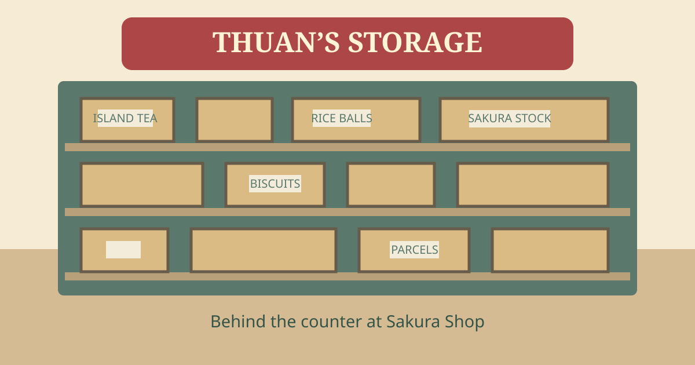

Johansson Town
Your guide to a 1990s island: working quays, quiet gardens, small shops and familiar faces.
KITANO-JIMA VISITOR BUREAU · 1997 EDITION
Take the long way home.
Step off the boat into a town with time for you. Meet Thuan at Sakura, follow the harbour deliveries, browse a book, or spend the afternoon walking through the garden.
Meet your neighboursMorning at Sakura
A shop door opens, shelves fill, and the street wakes up. Drop in for something small and a familiar hello.
Sakura Shop · GROCERIES & DAILY GOODSThe long way round
Browse Front-Row Books, visit the dock workshop, or follow the paths through Aoba Garden. The pond and onsen make a peaceful afternoon stop.
Minato Town · STREETS & HARBOURStay for the evening
When the lanterns come on, stop by Minato. Nao is there, and there’s always time for one more conversation.
Minato · THE NEIGHBOURHOOD IZAKAYAThuan opens Sakura. Nao keeps the evening going at Minato. Around them, the neighbourhood goes about its day — working, walking, talking and coming home.
Meet the people of the island

BEHIND THE SHOP Restock the konbini with Thuan Walk Thuan through Sakura Shōten's stockroom, pick the day's list and restock the shelves. The day’s deliveries are waiting behind the shop. Open the stockroomHarbour Birds
MINATO TORI
Charcoal yakitori until last pour. Hiroshi turns the skewers; Nao keeps the sauce.
Waiting for the tide
SHIOMACHI
Junmai from the harbour brewery. Waiting for the tide, one cup at a time.
Minato
MINATO
The house poster. Red lanterns, the noren, and Welcome back — welcome back.
Plan your visitStarting time, street controls & opening hours＋
04 · TOWN CLOCK
Town clock
LIVE · VISITOR CLOCK 13 SEP 1997
HEISEI 9 · SATURDAY
16:42:00
AFTERNOON
Shops are open.
SHOPS 00/00 OPEN · HARBOUR DISTRICT TIME
LIVE follows your own clock and today's date. Pick a time to start the town there instead; it can run faster.
Street controls
06 · STREET CONTROLS
- WASD / left stickWalk
- ShiftRun
- Mouse / drag / right stickLook
- SpaceJump
- EInteract / stand
- RDrink
- QTown book
- BNotebook
- NTown clock
| No. | Place | District | Hours | Now |
|---|
NOTICE A-14
Outer pier after dark
Boards are wet and unlit past twenty hundred. Walk the inner quay.
NOTICE B-07
Evening paper
Reiko works the evening press inside Front-Row Books until 00:30. Newspapers are available at Aya’s counter.
NOTICE C-02
Form 3D printer
Five collectible patterns at the shared bookshop workshop. Speak to Thuan at Sakura to sell a finished piece.
NOTICE D-11
Opening seat
Visitors arrive seated on the cedar bench, east sidewalk, facing Sakura. Press E to stand.